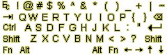
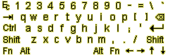

fbvnc is a framebuffer based viewer for the Virtual Network Computing (VNC) protocol. It is designed for Linux-based handhelds, such as the Compaq iPAQ and Sharp Zaurus, and controlled through the touch screen and hardware buttons. The intended use is to connect this client to a background Xvnc process also running on the handheld.
Important: This software is for Linux, it does not work on Windows CE.
It offers the following features:
And, of course, it offers the benefits of a VNC based solution - you can access your handheld desktop simultaneously from your PC over a network connection, or display a remote Linux or Windows desktop on the handheld. This is especially useful when combined with a wireless network.
For more about VNC, please refer to the official web page: http://www.uk.research.att.com/vnc/.
fbvnc was written by Klaus Weidner <kw@w-m-p.com> and is distributed under the terms of the GNU General Public License as published by the Free Software Foundation. It includes some code from the svncviewer for svgalib, written by Ganesh Varadarajan and Sitaram Iyer.
|
|
||||
|
You may be wondering if it makes sense to run a VNC client+server on the handheld instead of the native X server. Obviously all the features needed could also be integrated into the X server, but (since I am not familiar with the innards of the X server), I found it much easier to add them to the simple thin client for the VNC protocol.
IMHO, the keyboard (or in general, the main input method) should not be an X client, because it is very hard to get the interaction between the user, the input program, the window manager and the application working smoothly. Those of you who have spent some time working with Xscribble or xvkbd might agree ;-) (I do not want to disparage the authors of any of the programs involved - this is a fundamentally hard problem when working within the context of an X client.)
The anti-aliased virtual desktop attempts to address the problem of the low screen resolution. Patching X applications to use less screen real estate is painful to impossible - and this way, many more programs are usable immediately without any changes. For example, the "ace of penguins" game suite (available from www.delorie.com) now works on the iPAQ unmodified, making the machine much more useful :-) And IMHO, a 10x20 font scaled down to 5x10 is much more readable than an equivalently-sized non-antialiased font. (Note: fbvnc (and this text) was written in October 2000, at that time anti-aliasing was not yet available in the X server for the iPAQ.)
If you just want the VNC client and already have a VNC server (i.e. on a different machine on the network), you just need the 'fbvnc' binary for your architecture. Unzip it and put it in your path somewhere, it does not depend on any other files except for the C library. Run it from the command line and specify the server to connect to:
$ fbvnc 10.1.1.3:0
If you also want to run a VNC server on your handheld, you have several options. Check out the chroot-debian package (sorry, no web page yet) if you want a full Debian environment including X11, or use Qtopia-X.
| Overlay icon | Action |
| Adjust audio volume (requires aumix binary). | |
| Toggle landscape/portrait mode, and choose scaling factor from 1:1 to 1:4. | |
| Toggle overlay keyboard on/off (press 'pan' button to remove all overlays) | |
| Toggle mouse mode between single button mode (the touchscreen produces left-button mouse clicks) and three-button mode (the touchscreen only moves the mouse, press buttons to generate mouse clicks). | |
| Toggle backlight on/off. | |
|   | The keyboard - special key mappings are described below. The space bar (between the 'Alt' keys) works as usual, even though it's invisible. |
The hardware buttons are used as follows:
| Button | "single button" mouse mode | "three button" mouse mode | with [Action] button | |
| iPAQ | Zaurus | |||
| [Calendar] | [Calendar] | iPAQ: <Tab> key Zaurus: <Control> key | Mouse button one (left) | Toggle mouse mode (1 or 3 buttons) |
| [Contacts] | [Contacts] | Page up (<Prior> keysym) | Mouse button two (middle) | Zoom desktop out |
| [Q] | [Menu] | Page down (<Next> keysym) | Mouse button three (right) | Zoom desktop in |
| [Start] | [Home] | Panning: press and hold button, and
drag the pointer to pan the virtual desktop Press and release to toggle the keyboard overlay on/off Press eight times in a row to recalibrate the touchscreen
| not mapped | |
| n/a | [Mail] | <Tab> key | Rotate desktop | |
| Cursor pad | Arrow keys | Pan desktop | ||
| [Action] (center of cursor pad) | Use together with other buttons for additional functions | |||
| n/a | [Cancel] | <Escape> key | Suspend handheld | |
| [Record] | [OK] | <Return> key | Toggle backlight | |
The modifier keys <Shift>, <Ctrl>, <Alt>, and <Fn> are all sticky:
Additional functions are available through the "Fn" modifier key:
| <Fn>-[ ] | zoom the desktop in / out |
| <Fn>-<Shift>-Q | quit fbvnc, i.e. to get back to native X11 or QPE. Be careful - you might lock yourself out of the iPAQ if you shut down all GUIs. Re-run fbvnc to get a fresh client - as long as Xvnc is still alive in the background, your X11 applications keep running while you're disconnected. |
| <Fn>-x | open emergency xterm (requires "xterm" binary) |
| <Fn>-1234567890-= | Function keys F1..F12 |
| <Fn>-Cursor | PgUp, PgDown, Home, End |
| <Fn>-<BackSpace> | Delete |
| <Fn>-<Tab> | Insert |
| <Fn>-<Escape> | Tilde ( ~ ) |
| <Fn>-aouAOUsS | German Umlaut (diaeresis) |
The full list is available in the function fn_translate() in the file overlay.c :-)
The grayscale iPAQs are not supported (neither is anything else that doesn't have a 16-bit color display) Since handling different pixel layouts would require a fair amount of work to support, this is unlikely to change anytime soon.
The volume control tries to run "aumix", which isn't part of the familiar distribution. Nothing bad happens, the volume control just doesn't work if you don't have it.
Note that you don't need to do these steps if you choose to install the binary packages. If you want to experiment with the code, read on...
Get the Unix source code for VNC, unpack and compile it. It is available from http://www.uk.research.att.com/vnc/.
You also need the ofbis library, available from: http://osis.nocrew.org/ofbis/. Set the path in fbvnc/Imakefile to match where you installed this library.
Move the fbvnc directory into the VNC source directory:
# mv fbvnc vnc_unixsrc/
Now you can build the code:
# cd fbvnc
# xmkmf
# make
Add more overlay icons, i.e. a battery power display.
If the VNC client and server are running on the same machine, a shared memory area (written by Xvnc and read by fbvnc) could be used to avoid duplicate bitmap storage and unnecessary overhead. The fbvnc screen redraws are already quite fast, performance is mostly limited by the overhead imposed by the TCP socket based VNC protocol.
Optimize the scaled and rotated display modes further. The current (v0.7) performance values for local screen redraw (no communication with the VNC server) in frames per second are:
| 1:1 | 1:2 | 1:3 | 1:4 | |
| Landscape | 191 fps | 29.1 fps | 12.5 fps | 18.9 fps |
| Portrait | 29.7 fps | 12.3 fps | 8.8 fps | 10.0 fps |
Implement virtual terminal switching, so that fbvnc could be used concurrently with Xfbdev or QPE. Currently, exiting fbvnc returns you to the previously used virtual terminal. Re-run the vnc shell script to reconnect to the session again.